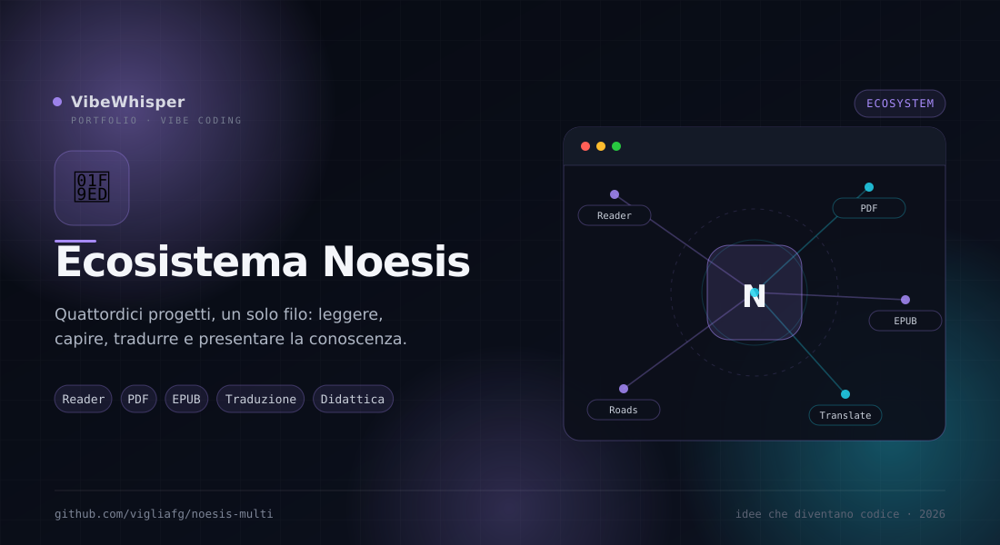

Ecosistema Noesis
Quattordici progetti, un solo filo: leggere, capire, tradurre e presentare la conoscenza. Questa mappa li ordina per tipo di lavoro, dal reader che apre un EPUB al servizio che traduce un PDF senza toccarne il layout.
Sei modi di lavorare, un ecosistema
Ogni progetto nasce da un gesto preciso: aprire un libro, estrarre una pagina, tradurre un documento, comprimere un EPUB, disegnare un concetto o raccontare un'opera. Qui sotto trovi la classificazione completa; più in basso le schede, con i link alle pagine di dettaglio e ai repository.
| Tipo di lavoro | Progetti | Superficie |
|---|---|---|
| Leggere e studiare | Noesis Reader · Noesis Multi · Noesis | Web |
| Tradurre libri | Noesis Ebook Translator · Noesis Ebook Translator Engine | Desktop + CLI/TUI |
| Leggere ed estrarre PDF | Noesis PDF Reader Lite · Noesis PDF Reader Lite Engine · Noesis PDF Reader | Desktop + CLI |
| Tradurre PDF | Noesis PDF Cloner · Noesis PDF Cloner Service | Desktop + Server |
| Post-produzione e disegno | Noesis EPUB Tools · Noesis Excalidraw | Web |
| Didattica e comunicazione | Noesis Roads · Noesis Reader Website | Web |
Leggere e studiare
Il cuore dell'ecosistema: ambienti di lettura EPUB che funzionano nel browser, senza server e senza account. Dal prototipo monolitico al reader completo con annotazioni, editor e traduzione.
Noesis Multi
Web · multilinguaLa versione multilingua del sistema Reading-to-Knowledge: un unico file HTML con reader EPUB, ambiente di studio integrato e documentazione completa di architettura e workflow.
Noesis
Prototipo · HTMLIl prototipo originale da cui è partito tutto: lettore e ambiente di studio in pagine HTML monolitiche, con la documentazione di architettura, i pattern di estensione e le guide CSS.
Tradurre libri EPUB
Lo stesso motore di traduzione, preso verbatim dal plugin Calibre Ebook Translator, in due confezioni: l'app desktop per chi vuole leggere e rivedere, e l'engine per chi vuole automatizzare.
Leggere ed estrarre dai PDF
Dalla pagina renderizzata al Markdown: tre generazioni dello stesso motore di estrazione, con l'engine adattativo che ricostruisce colonne, tabelle, figure e header. La versione Lite è quella attuale; la Reader completa è la base da cui è nata.
Noesis PDF Reader
Desktop · predecessoreLa versione completa da cui è nata la linea Lite: più motori di estrazione selezionabili a runtime, traduzione, gallery delle figure e un lungo lavoro di benchmark e fix di layout.
Tradurre senza perdere il layout
Qui il PDF non viene estratto: viene clonato. La pagina tradotta mantiene testo, immagini, tabelle e numeri al loro posto, e può essere esportata in PDF, ZIP o cartella. La pipeline è la stessa, desktop o server.
Post-produzione e disegno
I progetti che stanno attorno alla lettura: sistemano un EPUB dopo averlo creato o tradotto, oppure offrono un canvas locale per annotare, spiegare e progettare.
Noesis EPUB Tools
Web · 3 strumentiUna suite unificata per la post-produzione EPUB: Slimmer singolo e batch per comprimere le immagini, e Chapter Splitter per estrarre capitoli in file autonomi con TOC e asset.
Noesis Excalidraw
Web · localeBuild standalone di Excalidraw per Noesis: un canvas locale per disegnare, annotare e progettare senza cloud. Pensato per integrarsi nel flusso di studio e di presentazione.
Didattica e comunicazione
Il lato in uscita: trasformare ciò che si è letto in schede didattiche, presentazioni e un sito che racconta il progetto. Qui la conoscenza diventa materiale per gli altri.
Un motore, più superfici
La classificazione non è solo tematica: molti progetti condividono codice o pipeline. Ecco le relazioni principali da tenere a mente.
- Desktop ↔ CLI — Noesis Ebook Translator, PDF Reader Lite e PDF Cloner hanno un'edizione engine che riusa lo stesso motore, con cache e opzioni condivise.
- Desktop → Server — Noesis PDF Cloner Service porta su Docker la pipeline di PDF Cloner, con coda, worker e cache condivisa.
- Un solo motore di layout — PDF Reader Lite e il suo engine condividono i pack di fix; PDF Reader è il predecessore da cui è nata la semplificazione.
- Strumenti di contorno — EPUB Tools interviene dopo la creazione o la traduzione; Excalidraw e Roads trasformano il testo in materiale visivo e didattico.